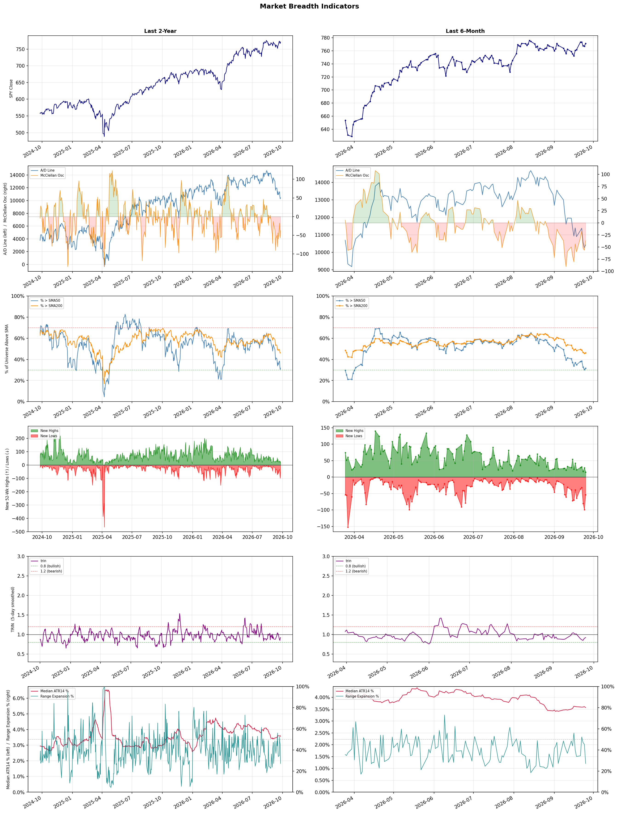

A daily market breadth and sector rotation report for active investors
| Item | Read |
|---|---|
| Regime | Defensive |
| Risk posture | Defensive |
| Universe | 1,320 stocks tracked · 15 new 52-week highs · 30 active swing setups |
| Breadth | only 31.7% of tracked stocks are above SMA50, new lows exceed new highs (54 vs 15), McClellan oscillator (breadth momentum) is negative at -37.3 |
| Leadership | Oil & Gas Refining & Marketing, Diagnostics & Research, and Health Information Services |
| Weakest groups | Gambling, Resorts & Casinos, and Solar |
Use this report to prioritize research and chart review; validate entries, stops, liquidity, earnings, and risk before acting.
| Item | Read |
|---|---|
| Primary read | Defensive regime with Defensive risk posture. |
| Research queue | PBF, MPC, DINO, UGP, VLO |
| Leadership focus | Oil & Gas Refining & Marketing, Diagnostics & Research, and Health Information Services |
| Caution list | Gambling, Resorts & Casinos, and Solar |
| Review prompt | Check extension risk, chart location, fundamentals, valuation, and earnings before using any research row. |
| Item | Read |
|---|---|
| Primary read | 4 active risk warnings; use screen output as watchlist input only. |
| Bullish screens | NTRA, HPQ, SMCI, UMAC, ALAB |
| Bearish screens | MIAX, WOOF, ALKT, SPRY, AMTM |
| Alerts / levels | Automated trigger, stop, ATR, liquidity, reward/risk, and event-risk levels are pending future enrichment. |
| Review prompt | Open the linked chart, define trigger and invalidation, then check liquidity and event risk independently. |
Risk Posture: Defensive — screen backdrop favors caution; require independent risk review before new exposure
Metric context: McClellan below -50 = elevated selling pressure; below -100 = washout territory. Range Expansion = share of stocks with daily range above their 20-day average. Signal Density = share of tracked names appearing in signal screens.
| Breadth Date | % > SMA50 | % > SMA200 | New Highs | New Lows | McClellan | Median Range | Avg Range | Median ATR14 | Range Expansion | Signal Density |
|---|---|---|---|---|---|---|---|---|---|---|
| 2026-09-25 | 31.7% | 46.3% | 15 | 54 | -37.3 | 2.7% | 3.1% | 3.6% | 27.2% | 10.5% |

Prior comparison date: September 24, 2026
| Metric | Prior | Current | Change |
|---|---|---|---|
| Regime | Defensive | Defensive | unchanged |
| Risk Posture | Defensive | Defensive | unchanged |
| % > SMA50 | 30.5% | 31.7% | +1.2 pts |
| % > SMA200 | 45.9% | 46.3% | +0.4 pts |
| New Highs | 28 | 15 | -13 |
| New Lows | 99 | 54 | +45 |
Top-10 industries entering: Semiconductor Equipment & Materials. Top-10 industries leaving: Capital Markets. New multi-signal long setups: NTRA. New multi-signal short setups: AMTM, CMCSA, DNUT, NIO, OTIS, SFM, SLI, SPRY, WB.
| Status | Tickers | Read |
|---|---|---|
| Added | AEHR, AKAM, ALAB, AMTM, ANF, ARM, CLSK, CMCSA | New technical screen matches vs prior report. |
| Removed | ADTN, AON, AU, BIDU, BN, BUR, CG, CLX | No longer present in today's technical screen matches. |
| Still Active | ALKT, FMC, MIAX, VRRM, WOOF | Appeared in both current and prior reports. |
| Promoted | none | Model Screen Score improved by at least 15 points. |
| Downgraded | ALKT | Model Screen Score declined by at least 15 points. |
| Direction | Industry | ETF | Prior Rank | Current Rank | Days | Rank Change |
|---|---|---|---|---|---|---|
| Rose | Semiconductor Equipment & Materials | SOXX | 75 | 9 | 28 | +66 |
| Rose | Steel | SLX | 71 | 6 | 35 | +65 |
| Rose | Semiconductors | SOXX | 72 | 7 | 35 | +65 |
| Rose | Capital Markets | KCE | 69 | 12 | 42 | +57 |
| Rose | Electronic Components | XLK | 61 | 8 | 28 | +53 |
Bull: The Semiconductor Equipment & Materials sector is experiencing rising relative strength primarily due to increased investment and optimism surrounding key players like AMD, Intel, and Nvidia, as highlighted by the significant market movements in ETFs and stocks such as Lam Research and Applied Materials. The resurgence in demand for semiconductor technology, driven by advancements in AI and computing, is further evidenced by the positive performance of ETFs and the rotation from Nvidia-heavy funds to more diversified options, indicating a broader confidence in the sector's growth trajectory. Additionally, the overall market sentiment is buoyed by falling oil prices and rising equity futures, which typically support capital-intensive industries like semiconductor manufacturing.
Bear: While the semiconductor sector may currently exhibit rising relative strength, this optimism could be misleading given the cyclical nature of the industry and potential headwinds such as increasing competition, supply chain vulnerabilities, and geopolitical tensions affecting manufacturing. Additionally, the heavy concentration in a few key players like Nvidia raises concerns about overvaluation and the sustainability of growth, especially if demand for AI and computing technologies does not meet inflated market expectations. As interest rates rise, capital-intensive sectors like semiconductors may also face increased borrowing costs, further dampening investment prospects.
Verdict: The semiconductor equipment and materials sector is experiencing a bullish trend driven by robust investments and optimism surrounding major players like AMD, Intel, and Nvidia, fueled by surging demand for AI and computing technologies. However, investors should remain cautious of potential risks, including the cyclical nature of the industry, increasing competition, and geopolitical tensions that could disrupt supply chains and impact growth sustainability. As interest rates rise, the cost of capital may also pose a challenge for further investment in this capital-intensive sector.
Sources: Yahoo Finance, Google News
Bull: The steel industry, as represented by the VanEck Steel ETF (SLX), is experiencing a rising relative strength primarily due to increased demand driven by the AI sector, as highlighted in the headline "AI Hunger Fuels VanEck Steel ETF (SLX): Is There More Room to Grow?" This surge in demand for steel is further supported by the industry's performance, with SLX touching a new 52-week high, indicating strong market confidence and investment interest. Additionally, the competitive landscape among key players like Nucor and Steel Dynamics suggests that while challenges exist, the overall outlook remains positive, reinforcing the bullish sentiment in the sector.
Bear: While the rising relative strength and recent highs of the VanEck Steel ETF (SLX) may suggest optimism, this bullish sentiment overlooks significant headwinds facing the steel industry, including potential overcapacity, rising raw material costs, and geopolitical uncertainties that could dampen demand. Furthermore, the reliance on AI-driven growth may be overstated, as the broader economic landscape remains fragile, and any slowdown in tech investments could lead to a sharp decline in steel demand, undermining the current valuation.
Verdict: The steel industry's recent rise, as evidenced by the VanEck Steel ETF (SLX) reaching new highs, is fundamentally driven by increased demand from the AI sector, which is boosting confidence and investment in steel production. However, investors should remain cautious of potential risks, including overcapacity and rising raw material costs, as well as the fragility of the broader economic environment that could lead to a downturn in demand if tech investments slow. Therefore, while the bullish outlook is compelling, it is essential to monitor these risks closely before making investment decisions.
Sources: Yahoo Finance, Google News
Bull: The semiconductor sector is experiencing a bullish trend primarily due to the increasing demand for AI and advanced computing technologies, as highlighted by the focus on AI semiconductor stocks and AMD's significant market impact. Additionally, the sector's resilience is underscored by a broader market rebound, with chip stocks breaking through previous resistance levels, suggesting strong investor confidence and a rotation from concentrated holdings in larger firms like Nvidia to more diversified approaches in ETFs like PSI. This shift, combined with positive movements in related stocks like Arm and Qualcomm, further strengthens the case for sustained growth in the semiconductor industry.
Bear: While the semiconductor sector may currently exhibit a rising trend, it is crucial to consider several underlying risks that could undermine this bullish narrative. The heavy concentration of assets in a few large players like Intel, AMD, and Nvidia raises concerns about market vulnerability; any negative developments or earnings misses from these companies could disproportionately impact the entire sector. Additionally, the recent rebound may be driven more by speculative trading and short-term momentum rather than sustainable demand growth, especially as rising treasury yields and potential economic headwinds could dampen consumer and business spending on technology in the coming quarters.
Verdict: The semiconductor industry's bullish trend is fundamentally driven by surging demand for AI and advanced computing technologies, which is attracting significant investment and fostering market confidence. However, investors should remain cautious of the concentration risk posed by a few dominant players like Intel, AMD, and Nvidia; any negative developments from these companies could lead to a sharp downturn in the sector. To navigate this landscape, consider diversifying investments across a broader range of semiconductor stocks or ETFs to mitigate potential volatility.
Sources: Yahoo Finance, Google News
Bull: The Capital Markets sector, as represented by the SPDR S&P Capital Markets ETF (KCE), is experiencing rising relative strength primarily due to strong growth drivers highlighted by Macquarie, which identified a $500 billion flywheel effect propelling capital market stocks. This growth is further supported by tightening global markets that are driving increased activity in the sector, as noted in the Zacks Investment Research article. Additionally, the overall bullish sentiment on Wall Street, as suggested by the Nasdaq Stock Outlook, indicates a favorable macroeconomic environment that is likely benefiting capital market firms.
Bear: While the bull thesis highlights strong growth drivers and a favorable macroeconomic environment, it overlooks the potential risks associated with rising interest rates and inflation, which could dampen capital market activity and investor sentiment. Additionally, the "flywheel effect" touted by Macquarie may be overly optimistic, as historical trends suggest that capital markets are often cyclical and vulnerable to sudden downturns, especially in a tightening economic landscape. The current bullish sentiment on Wall Street could quickly shift if economic indicators falter, leading to increased volatility and reduced confidence in capital market stocks.
Verdict: The Capital Markets sector is likely experiencing upward momentum due to strong growth drivers, including the $500 billion flywheel effect identified by Macquarie and increased activity from tightening global markets, which collectively enhance investor sentiment. However, the key risk lies in the potential impact of rising interest rates and inflation, which could dampen market activity and lead to increased volatility if economic indicators weaken. Investors should remain vigilant and consider potential shifts in macroeconomic conditions that could affect capital market performance.
Sources: Yahoo Finance, Google News
Bull: The rising relative strength of the Electronic Components sector can be attributed to the robust performance and optimistic outlook of key players like Dell and Microsoft, as highlighted in recent headlines. Dell's 7% surge following Morgan Stanley's bullish $756 price target and Microsoft's 4% climb after Oppenheimer raised its target to $570 underscore strong investor sentiment and confidence in growth drivers such as AI and enterprise solutions. Additionally, the overall positive movement in U.S. equities and exchange-traded funds, despite some late-afternoon retreats, indicates a favorable macroeconomic environment that supports technology investments, further bolstering the sector's strength.
Bear: While the recent gains in stocks like Dell and Microsoft may seem promising, they are largely driven by speculative enthusiasm around AI and enterprise solutions rather than fundamental improvements in earnings or market conditions. Additionally, the late-afternoon retreat in tech stocks suggests underlying volatility and investor caution, especially in a rising interest rate environment that typically pressures growth stocks. This could indicate that the sector's relative strength is more a reflection of short-term sentiment rather than sustainable growth, raising concerns about potential corrections ahead.
Verdict: The Electronic Components sector's rise is fundamentally driven by strong investor sentiment fueled by robust performances from key players like Dell and Microsoft, particularly in AI and enterprise solutions, indicating confidence in future growth. However, the key risk lies in the speculative nature of this enthusiasm, as a potential correction could occur if rising interest rates pressure growth stocks and investor caution increases, suggesting a need for careful monitoring of market conditions and earnings fundamentals.
Sources: Yahoo Finance, Google News
| Direction | Industry | ETF | Prior Rank | Current Rank | Days | Rank Change |
|---|---|---|---|---|---|---|
| Fell | Travel Services | N/A | 18 | 79 | 42 | -61 |
| Fell | Restaurants | N/A | 24 | 84 | 35 | -60 |
| Fell | Real Estate Services | N/A | 28 | 81 | 35 | -53 |
| Fell | Uranium | URA | 32 | 82 | 35 | -50 |
| Fell | Packaging & Containers | N/A | 27 | 75 | 28 | -48 |
Bear: While the bull analyst points to potential recovery and innovations as reasons for optimism in the Travel Services sector, the persistent macroeconomic challenges, including high inflation and interest rates, are likely to continue suppressing consumer discretionary spending. Furthermore, the focus on "undervalued" stocks may simply reflect a market correction rather than genuine growth potential; many companies in this sector are burdened by increased operational costs and shifting consumer preferences towards more affordable or local travel options. Thus, the relative strength trend falling indicates deeper structural issues that may not be resolved by temporary innovations or selective stock picks.
Bull: The Travel Services sector is experiencing a decline in relative strength primarily due to macroeconomic pressures such as rising inflation and interest rates, which can dampen consumer spending on discretionary travel. Recent headlines highlight a focus on undervalued stocks and the potential for growth in the sector, suggesting that while current performance may be weak, there is optimism about recovery and investment opportunities, as seen in the discussions around companies like Expedia and Marriott. Additionally, innovations like Webuy's AI travel card indicate a shift towards enhancing customer experience, which could drive future demand as consumers become more confident in travel planning.
Verdict: The Travel Services sector is experiencing a decline primarily due to persistent macroeconomic pressures, such as high inflation and interest rates, which are suppressing consumer discretionary spending on travel. While there is some optimism around innovations and potential recovery, the key risk lies in the structural issues highlighted by the bear case, including rising operational costs and a shift towards more affordable travel options, which may limit the sector's ability to rebound in the near term. Investors should approach this sector with caution, focusing on companies that demonstrate strong fundamentals and adaptability to changing consumer preferences.
Sources: Google News
Bear: While the bull analyst highlights potential long-term recovery and attractive yields, the persistent decline in the restaurant industry's relative strength suggests deeper, systemic issues that may not be easily resolved. Inflationary pressures and shifting consumer preferences are not just temporary hurdles; they indicate a fundamental shift in dining habits, with consumers increasingly favoring value-oriented or at-home dining options. This could lead to prolonged stagnation or decline in a sector that is heavily reliant on discretionary spending, making the current stock valuations appear overly optimistic.
Bull: The falling relative strength of the restaurant industry, as highlighted in recent headlines, can be attributed to broader economic concerns affecting consumer discretionary spending, which is evident in the struggles of major players like Restaurant Brands International (QSR) and Darden Restaurants (DRI). Factors such as inflationary pressures and changing consumer preferences are leading to a cautious outlook, causing investors to reassess the sector's growth potential despite attractive dividend yields, as noted in the article discussing QSR's 3.5% yield. However, this presents a buying opportunity for long-term investors as the industry adapts and recovers.
Verdict: The restaurant industry's decline is primarily driven by persistent inflationary pressures and a fundamental shift in consumer preferences towards value-oriented and at-home dining options, which are reshaping discretionary spending patterns. While the bull thesis suggests a potential recovery and attractive dividends for long-term investors, the bear case highlights a key risk: if these changes in consumer behavior prove to be lasting rather than temporary, the sector may face prolonged stagnation, making current valuations overly optimistic and warranting caution in investment decisions.
Sources: Google News
Bear: While concerns about AI disruption and macroeconomic factors are valid, the bearish case against the Real Estate Services sector is primarily rooted in the fundamental challenges facing the commercial real estate market, particularly in the office space segment. The ongoing shift towards remote work and hybrid models has led to a significant increase in vacancy rates and declining rental yields, which are not just temporary market fluctuations but indicative of a longer-term structural change. Furthermore, as interest rates remain elevated, financing costs for real estate transactions are likely to rise, further dampening investment activity and exacerbating the sector's underperformance.
Bull: The Real Estate Services sector is experiencing a decline in relative strength primarily due to heightened investor concerns about the impact of AI on traditional business models, as indicated by headlines discussing office real estate stocks tumbling amid fears of AI disruption. Additionally, the recent earnings reports, such as those from Cushman & Wakefield, suggest challenges in the consumer discretionary segment, further contributing to negative sentiment in the sector. These macroeconomic factors, combined with a broader market apprehension towards real estate investments, have led to the underperformance of Real Estate Services compared to other industries.
Verdict: The Real Estate Services sector is likely experiencing a decline due to a combination of structural challenges in the commercial real estate market, particularly in office spaces, and rising interest rates that increase financing costs. The shift towards remote work has led to higher vacancy rates and declining rental yields, posing a significant risk to future investment activity. Investors should closely monitor these trends, as they may indicate a prolonged downturn in the sector.
Sources: Google News
Bear: While the bull analyst attributes the sector's volatility to shifts in investor sentiment, the underlying fundamentals of the uranium market remain concerning. The mixed performance of key players, coupled with UBS's downgrade of NuScale due to cash burn and project delays, underscores a lack of confidence in the long-term viability of many companies in this space. Moreover, the distinction between profitable producers and loss-making developers suggests that the sector may be facing a broader structural issue, where speculative investments in development-stage companies could lead to significant losses as market realities set in.
Bull: The recent decline in the relative strength of the uranium sector can be attributed to a combination of sector-specific volatility and investor sentiment shifts, as highlighted by the headlines. Notably, the mixed performance of key players like NuScale Power and Oklo, along with Piper Sandler's segmentation of the sector, indicates a growing divide between profitable uranium producers and loss-making developers, which may be causing uncertainty among investors. Additionally, UBS's downgrade of NuScale due to concerns over cash burn and project timelines has likely contributed to the bearish sentiment, overshadowing the potential for nuclear energy's resurgence amid rising contract prices.
Verdict: The recent decline in the uranium sector is primarily driven by a combination of mixed performance among key players and heightened investor caution stemming from UBS's downgrade of NuScale, which raises concerns about cash burn and project timelines. This situation highlights a key risk: the potential for significant losses from speculative investments in development-stage companies, which may struggle to achieve profitability amid broader structural challenges in the market. Investors should closely monitor the financial health of uranium producers and the viability of development projects before making investment decisions.
Sources: Yahoo Finance, Google News
Bear: While the bull analyst highlights potential resilience in the Packaging & Containers sector, the persistent geopolitical tensions and rising raw material costs present significant headwinds that are likely to outweigh any short-term gains. The industry's relative strength trend is falling, indicating that even selective opportunities may struggle to gain traction in a market characterized by declining consumer demand and increased operational costs. Moreover, the mention of "penny stocks" and speculative picks raises concerns about the overall stability and long-term viability of the sector, suggesting that investors should remain cautious rather than optimistic.
Bull: The Packaging & Containers industry is experiencing a decline in relative strength primarily due to macroeconomic pressures stemming from geopolitical tensions, such as the Iran war, which have adversely affected supply chains and increased costs, as highlighted in the Morningstar article. Additionally, the industry is facing challenges related to rising raw material prices and shifting consumer preferences, contributing to its underperformance compared to other sectors. However, the recent gains in Canadian stock movers suggest potential resilience and opportunities for select companies within the sector, indicating that not all players are equally affected.
Verdict: The Packaging & Containers industry is likely experiencing a decline due to persistent macroeconomic pressures, including geopolitical tensions and rising raw material costs, which have strained supply chains and increased operational expenses. The key risk highlighted by the bear thesis is that even selective opportunities may struggle to gain traction in a market with declining consumer demand, suggesting that investors should approach the sector with caution and prioritize companies demonstrating strong fundamentals and adaptability.
Sources: Google News
| Industry | Rank | ETF | 7d | 14d | 28d | 42d | Chg 42d | Size | 20D | 60D | Composite | Active Setups |
|---|---|---|---|---|---|---|---|---|---|---|---|---|
| Oil & Gas Refining & Marketing | 1 | CRAK | 1 | 1 | 8 | 5 | +4 | 6 | 9.1% | 48.3% | 0.984 | 0 |
| Diagnostics & Research | 2 | N/A | 2 | 4 | 1 | 2 | 0 | 16 | 7.6% | 28.2% | 0.950 | 0 |
| Health Information Services | 3 | N/A | 4 | 7 | 2 | 3 | 0 | 12 | 7.6% | 32.4% | 0.894 | 0 |
| Oil & Gas Integrated | 4 | XLE | 5 | 2 | 33 | 25 | +21 | 10 | 3.3% | 24.6% | 0.867 | 0 |
| Computer Hardware | 5 | XLK | 8 | 31 | 26 | 1 | -4 | 15 | 6.5% | 9.9% | 0.860 | 1 |
| Steel | 6 | SLX | 3 | 8 | 41 | 30 | +24 | 5 | 0.5% | 21.2% | 0.818 | 0 |
| Semiconductors | 7 | SOXX | 25 | 40 | 62 | 49 | +42 | 38 | 9.0% | -9.3% | 0.769 | 1 |
| Electronic Components | 8 | XLK | 39 | 51 | 61 | 13 | +5 | 10 | 3.9% | -12.3% | 0.734 | 1 |
| Semiconductor Equipment & Materials | 9 | SOXX | 57 | 67 | 75 | 20 | +11 | 17 | 5.9% | -12.6% | 0.718 | 1 |
| Software - Infrastructure | 10 | IGV | 6 | 28 | 11 | 7 | -3 | 62 | -3.8% | 6.6% | 0.715 | 1 |
Rank columns (7d–42d) show the industry's rank that many trading days ago — lower is stronger. Chg 42d = rank change vs 42 trading days ago — positive means the industry moved up. 20D and 60D are the mean stock return within the industry over that period. Active Setups: count of today's swing-trade candidates from this industry appearing across all signal screens.
| Industry | Rank | ETF | 7d | 14d | 28d | 42d | Chg 42d | Size | 20D | 60D | Composite | Active Setups |
|---|---|---|---|---|---|---|---|---|---|---|---|---|
| Gambling | 87 | N/A | 81 | 39 | 42 | 72 | -15 | 5 | -14.2% | -19.0% | 0.051 | 0 |
| Resorts & Casinos | 86 | N/A | 86 | 75 | 84 | 64 | -22 | 6 | -11.3% | -16.9% | 0.062 | 0 |
| Solar | 85 | TAN | 82 | 86 | 88 | 88 | +3 | 8 | -11.4% | -33.2% | 0.065 | 0 |
| Restaurants | 84 | N/A | 78 | 58 | 44 | 53 | -31 | 16 | -11.9% | -16.1% | 0.107 | 1 |
| REIT - Mortgage | 83 | N/A | 69 | 61 | 45 | 73 | -10 | 11 | -11.7% | -13.2% | 0.115 | 0 |
| Uranium | 82 | URA | 79 | 64 | 32 | 55 | -27 | 6 | -24.6% | -12.3% | 0.135 | 0 |
| Real Estate Services | 81 | N/A | 71 | 74 | 40 | 63 | -18 | 9 | -12.1% | -14.6% | 0.141 | 0 |
| Leisure | 80 | N/A | 83 | 73 | 70 | 71 | -9 | 9 | -9.9% | -13.9% | 0.152 | 0 |
| Travel Services | 79 | N/A | 76 | 78 | 58 | 18 | -61 | 10 | -12.4% | -13.7% | 0.161 | 0 |
| Chemicals | 78 | N/A | 87 | 82 | 86 | 87 | +9 | 8 | -8.5% | -18.9% | 0.166 | 0 |
Rank columns (7d–42d) show the industry's rank that many trading days ago — lower is stronger. Chg 42d = rank change vs 42 trading days ago — positive means the industry moved up. 20D and 60D are the mean stock return within the industry over that period. Active Setups: count of today's swing-trade candidates from this industry appearing across all signal screens.
These are research candidates from top-ranked stocks, capped at five names per industry to avoid over-concentration. Returns shown (60D, 120D, 250D) are historical — they reflect where prices have already moved, not forward expectations. Extension Risk flags names that may require extra patience or a better entry point. They are not buy signals.
Chart: TV = TradingView chart (opens in browser); PDF = local chart file (if downloaded).
| Ticker | Name | Industry | Industry Rank | Market Cap | 60D Hist | 120D Hist | 250D Hist | Extension Risk | Research Reason | Chart |
|---|---|---|---|---|---|---|---|---|---|---|
| PBF | PBF Energy | Oil & Gas Refining & Marketing | 1 | N/A | 54.0% | 60.6% | 131.8% | Extended | Top-ranked in industry; extended | TV |
| MPC | Marathon Petroleum | Oil & Gas Refining & Marketing | 1 | N/A | 49.0% | 64.1% | 101.4% | Constructive | Top-ranked in industry | TV |
| DINO | HF Sinclair | Oil & Gas Refining & Marketing | 1 | N/A | 48.1% | 76.9% | 107.1% | Constructive | Top-ranked in industry | TV |
| UGP | Ultrapar Participacoes | Oil & Gas Refining & Marketing | 1 | N/A | 47.1% | 29.4% | 85.5% | Constructive | Top-ranked in industry | TV |
| VLO | Valero Energy | Oil & Gas Refining & Marketing | 1 | N/A | 44.3% | 59.0% | 125.1% | Constructive | Top-ranked in industry | TV |
| TWST | Twist Bioscience | Diagnostics & Research | 2 | N/A | 78.8% | 257.2% | 579.4% | Extended | Top-ranked in industry; extended | TV |
| NTRA | Natera | Diagnostics & Research | 2 | N/A | 49.3% | 101.4% | 153.2% | Extended | Top-ranked in industry; extended | TV |
| ILMN | Illumina | Diagnostics & Research | 2 | N/A | 46.8% | 111.4% | 194.5% | Extended | Top-ranked in industry; extended | TV |
| RVTY | Revvity | Diagnostics & Research | 2 | N/A | 34.0% | 71.3% | 80.3% | Constructive | Top-ranked in industry | TV |
| ADPT | Adaptive Biotechnologies | Diagnostics & Research | 2 | N/A | 31.6% | 109.0% | 122.6% | Extended | Top-ranked in industry; extended | TV |
| TXG | 10x Genomics | Health Information Services | 3 | N/A | 119.5% | 291.5% | 631.3% | Very extended | Top-ranked in industry; very extended | TV |
| SDGR | Schrodinger | Health Information Services | 3 | N/A | 76.0% | 150.4% | 49.5% | Extended | Top-ranked in industry; extended | TV |
| TEM | Tempus AI | Health Information Services | 3 | N/A | 38.0% | 79.7% | 8.3% | Constructive | Top-ranked in industry | TV |
| CERT | Certara | Health Information Services | 3 | N/A | 35.4% | 66.8% | -22.8% | Constructive | Top-ranked in industry | TV |
| DOCS | Doximity | Health Information Services | 3 | N/A | 22.0% | 14.3% | -64.6% | Constructive | Top-ranked in industry | TV |
| PBR | Petroleo Brasileiro SA Petrobras | Oil & Gas Integrated | 4 | N/A | 31.1% | 1.9% | 62.5% | Constructive | Top-ranked in industry | TV |
| SU | Suncor Energy | Oil & Gas Integrated | 4 | N/A | 28.1% | 4.5% | 63.3% | Constructive | Top-ranked in industry | TV |
| SHEL | Shell | Oil & Gas Integrated | 4 | N/A | 26.2% | 4.1% | 35.3% | Constructive | Top-ranked in industry | TV |
| BP | BP PLC | Oil & Gas Integrated | 4 | N/A | 23.6% | -4.8% | 30.1% | Constructive | Top-ranked in industry | TV |
| YPF | YPF SA | Oil & Gas Integrated | 4 | N/A | 15.9% | 18.7% | 100.0% | Constructive | Top-ranked in industry | TV |
These are technical screen matches from existing signal files. They are not trade recommendations. Trigger, stop, ATR, liquidity, reward/risk, and event risk still require separate validation until those inputs are available.
Model Screen Score is weighted by signal count, industry rank, freshness, and setup type. It is not a probability of profit, expected return, or suitability rating. Industry cap: max 3 candidates per industry.
Signal glossary: Momentum Pullback = stock in an uptrend that has pulled back 10–30% and shows re-entry conditions. MA Compression = short- and long-term moving averages converging, often preceding a directional move. Three-Day Up/Down = three consecutive closes in the same direction. New 52Wk High/Low = price reached a new annual extreme.
Chart: TV = TradingView chart (opens in browser); PDF = local chart file (if downloaded).
| Ticker | Industry | Setups | Close | Industry Rank | Signal Count | Model Screen Score | Reason | Chart |
|---|---|---|---|---|---|---|---|---|
| NTRA | Diagnostics & Research | New 52Wk High; Three-Day Up | 412.56 | 2 | 2 | 100 | Multi-signal; top industry breakout | TV |
| HPQ | Computer Hardware | Momentum Pullback | 31.30 | 5 | 1 | 58 | Single-signal; top industry pullback | TV |
| SMCI | Computer Hardware | Momentum Pullback | 43.26 | 5 | 1 | 58 | Single-signal; top industry pullback | TV |
| UMAC | Computer Hardware | Momentum Pullback | 24.05 | 5 | 1 | 58 | Single-signal; top industry pullback | TV |
| ALAB | Semiconductors | Momentum Pullback | 364.62 | 7 | 1 | 58 | Single-signal; top industry pullback | TV |
| ARM | Semiconductors | Momentum Pullback | 310.32 | 7 | 1 | 58 | Single-signal; top industry pullback | TV |
| HIMX | Semiconductors | Momentum Pullback | 14.44 | 7 | 1 | 58 | Single-signal; top industry pullback | TV |
| AEHR | Semiconductor Equipment & Materials | Momentum Pullback | 104.39 | 9 | 1 | 50 | Single-signal; top industry pullback | TV |
| LRCX | Semiconductor Equipment & Materials | Momentum Pullback | 315.21 | 9 | 1 | 50 | Single-signal; top industry pullback | TV |
| AKAM | Software - Infrastructure | Momentum Pullback | 113.94 | 10 | 1 | 50 | Single-signal; top industry pullback | TV |
| DOCN | Software - Infrastructure | Momentum Pullback | 139.75 | 10 | 1 | 50 | Single-signal; top industry pullback | TV |
| MDB | Software - Infrastructure | Momentum Pullback | 410.44 | 10 | 1 | 50 | Single-signal; top industry pullback | TV |
| CLSK | Capital Markets | Momentum Pullback | 13.95 | 12 | 1 | 50 | Single-signal; pullback setup | TV |
| TEL | Electronic Components | MA Compression | 218.59 | 8 | 1 | 45 | Single-signal; top industry setup | TV |
| ANF | Apparel Retail | Momentum Pullback | 135.71 | 18 | 1 | 42 | Single-signal; pullback setup | TV |
| DXYZ | Asset Management | Momentum Pullback | 30.62 | 22 | 1 | 42 | Single-signal; pullback setup | TV |
Bearish setups — stocks making new lows or showing persistent downside patterns. Validate carefully before acting.
| Ticker | Industry | Setups | Close | Industry Rank | Signal Count | Model Screen Score | Reason | Chart |
|---|---|---|---|---|---|---|---|---|
| MIAX | Capital Markets | New 52Wk Low; Three-Day Down | 34.90 | 12 | 2 | 55 | Multi-signal; new-low weakness | TV |
| WOOF | Specialty Retail | New 52Wk Low; Three-Day Down | 2.27 | 20 | 2 | 47 | Multi-signal; new-low weakness | TV |
| ALKT | Software - Application | New 52Wk Low; Three-Day Down | 13.80 | 32 | 2 | 40 | Multi-signal; new-low weakness | TV |
| SPRY | Biotechnology | New 52Wk Low; Three-Day Down | 4.08 | 40 | 2 | 40 | Multi-signal; new-low weakness | TV |
| AMTM | Specialty Business Services | New 52Wk Low; Three-Day Down | 19.19 | 42 | 2 | 35 | Multi-signal; new-low weakness | TV |
| CMCSA | Telecom Services | New 52Wk Low; Three-Day Down | 21.91 | 45 | 2 | 35 | Multi-signal; new-low weakness | TV |
| WB | Internet Content & Information | New 52Wk Low; Three-Day Down | 6.49 | 46 | 2 | 35 | Multi-signal; new-low weakness | TV |
| VRRM | Information Technology Services | New 52Wk Low; Three-Day Down | 3.24 | 51 | 2 | 35 | Multi-signal; new-low weakness | TV |
| FMC | Agricultural Inputs | New 52Wk Low; Three-Day Down | 9.58 | 53 | 2 | 35 | Multi-signal; new-low weakness | TV |
| OTIS | Specialty Industrial Machinery | New 52Wk Low; Three-Day Down | 65.94 | 55 | 2 | 35 | Multi-signal; new-low weakness | TV |
| DNUT | Grocery Stores | New 52Wk Low; Three-Day Down | 2.89 | 61 | 2 | 25 | Multi-signal; new-low weakness | TV |
| SFM | Grocery Stores | New 52Wk Low; Three-Day Down | 62.49 | 61 | 2 | 25 | Multi-signal; new-low weakness | TV |
| SLI | Other Industrial Metals & Mining | New 52Wk Low; Three-Day Down | 1.86 | 66 | 2 | 25 | Multi-signal; new-low weakness | TV |
| NIO | Auto Manufacturers | New 52Wk Low; Three-Day Down | 3.58 | 70 | 2 | 25 | Multi-signal; new-low weakness | TV |
How To Use This Report
| Use | Purpose |
|---|---|
| Market map | Start with breadth, regime, risk warnings, and what changed since the prior report. |
| Industry scan | Use leading, deteriorating, rising, and declining industries to focus research. |
| Research queue | Treat long-term candidates as names for deeper fundamental, valuation, and chart review. |
| Technical review | Treat bullish and bearish screen matches as watchlist inputs that require independent trigger, stop, liquidity, and event-risk checks. |
| Source follow-up | Use chart links and source files to verify raw inputs before relying on any row. |
What This Report Is Not
| Not | Meaning |
|---|---|
| Investment advice | The report does not evaluate personal objectives, risk tolerance, tax situation, account type, or suitability. |
| Buy/sell recommendation | Named tickers are research candidates or screen matches, not recommendations to transact. |
| Price target | The report does not provide fair value estimates, targets, or expected returns. |
| Trade plan | Trigger, stop, sizing, reward/risk, liquidity, and event-risk review remain separate user work. |
| Performance claim | Model Screen Score is not validated historical performance or a forecast of future results. |
| Item | Note |
|---|---|
| Version | Daily Report Methodology v1 |
| Model Screen Score | Screen-fit rank based on signal count, industry rank, freshness, and setup type. |
| Not predictive proof | The score is not expected return, probability of profit, historical validation, or suitability analysis. |
| Industry ranks | Composite industry ranks use existing daily ranking outputs and historical rank columns when available. |
| Research candidates | Long-term rows are research candidates from ranked stocks and leading industries, with historical returns labeled as historical only. |
| Technical matches | Bullish and bearish rows are screen matches requiring independent chart, trigger, stop, liquidity, and event-risk review. |
| Source | Status | Rows | Path |
|---|---|---|---|
| Market breadth | present | 1255 | breadth_20260925.csv |
| Industry composite rankings | present | 87 | all_industry_composite_20260925.csv |
| Top ranked stocks | present | 191 | top_ranked_composite_20260925.csv |
| All ranked stocks | present | 1320 | all_stocks_composite_sorted_20260925.csv |
| Top momentum pullbacks | present | 1474 | top_momentum_pullbacks_20260925.csv |
| MA compression | present | 1474 | ma_compression_stocks_20260925.csv |
| Three-day up/down | present | 164 | three_day_up_down_stocks_20260925.csv |
| New 52-week members | present | 69 | breadth_new_52wk_members_20260925.csv |
This report is generated from automated technical screens and is for informational and research purposes only. It is not investment advice, a solicitation, or a recommendation to buy or sell any security. Past performance is not indicative of future results. You are solely responsible for your own investment decisions. Consult a licensed financial advisor before acting on any information herein.